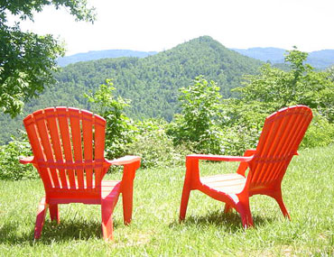

| |
|
| |
|  |
Stunning views all around.
|
|
| |
|
Moravian Falls
Hidden Hollow Retreat Cabin
1480 Hidden Hollow Lane
Moravian Falls, NC 28654
Hidden Hollow Retreat Cabin has been set apart for those seeking a place of rest and retreat from the busyness of life. This area derived its name from the Moravians who temporarily settled in this area during the mid 1700s. Hidden in the foothills of North Carolina, this cabin will provide the perfect atmosphere for those seeking a time of solitude and reflection.
The main cabin is two levels with three decks, three bedrooms and two baths. The patio apartment features one bedroom with a queen size bed and a single bed, along with a full bath, living room, dining area, and kitchen. It is surrounded by scenic views of the Brushy Mountains, a wooded forest, and the Blue Ridge Parkway.
Coffey Cabins
1403 Hidden Hollow Lane
Moravian Falls, NC 28654
A cozy retreat tucked into the foothills, back a gravel lane, literally driving through a creek and up the hill to a very special private residence with the luxurious rustic cabin warmth you would expect to be located in Moravian Falls.
A private residence with the amenities of home! 2 bedroom 1 bath easily sleeps five. It is surrounded by scenic views of the Brushy Mountains, a wooded forest, and the Blue Ridge Parkway.
Both retreats are located in Moravian Falls just 8 miles from Wilkesboro, NC, 30 minutes from the Blue Ridge Parkway, and 50 minutes from Blowing Rock, NC. You're just a short drive away from canoeing down the New River, or hiking/biking along the Parkway.
Perfect for those involved in any type of ministry needing a time out from their daily routine and a time in with God. Please view our other pages for more details of the surrounding area. For more information please call (704) 634-3903.
|